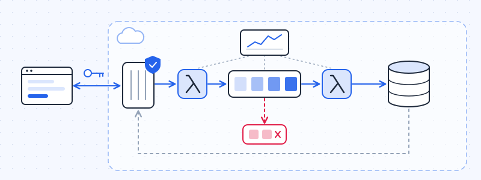

EVENT PLATFORM SERVICE
Serverless Cloud-Native Event Ingestion Platform (AWS)
Cloud-native event platform built on AWS to simulate an internal event ingestion and retrieval system. It is designed around a serverless, event-driven architecture where events are ingested via API Gateway, processed asynchronously, and persisted for later retrieval. The system emphasizes scalability, reliability, and clean architectural boundaries, applying real-world cloud design practices.
The architecture is built using AWS Lambda, API Gateway, DynamoDB, and SQS to enable fully decoupled asynchronous processing. It includes DLQ-based fault tolerance, JWT-based authentication for secure access, and CloudWatch observability for monitoring and tracing event flows. The system is designed to handle failures gracefully while maintaining data consistency and traceability across the pipeline.
Infrastructure is fully provisioned using Terraform, ensuring reproducible and consistent deployments across environments. The project also includes unit, integration, and end-to-end testing to validate both application logic and infrastructure behavior.
Key technical work:
- Designed and implemented a serverless event-driven architecture using AWS Lambda, API Gateway, DynamoDB, and SQS.
- Implemented asynchronous event processing with queue-based decoupling and DLQ-based fault tolerance.
- Developed JWT-based authentication using Lambda authorizers to secure API endpoints.
- Provisioned infrastructure using Terraform following Infrastructure as Code best practices.
- Implemented observability and monitoring using AWS CloudWatch (logs and metrics).
- Developed Python-based Lambda functions for event ingestion, validation, and processing pipelines.
- Built unit, integration, and end-to-end tests for backend and infrastructure validation.